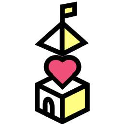
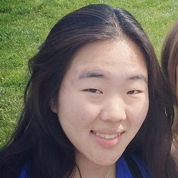

School Shaped
Experiences built with teachers
We ask teachers:
What is your ideal
curriculum
Then we partner them with teams of designers and engineers who can help make that happen.
The team provides the missing pieces which the teacher may not have the time or expertise to provide.
Software
Hardware
Research
Organization
We are a team of educators, engineers, designers and school builders.

David Gaynor
David likes to be learning. He believes that schools not only teach, but empower, and wants to make that easier.
Graham Hooton
Graham is a traveler, a twin, a creator of community, and a passionate believer in the power of education to change the world.

Ariana Chae
An engineer with a creative twist, Ari wants to create products that will serve immediate needs, especially in the ed-tech and K-12 education space.